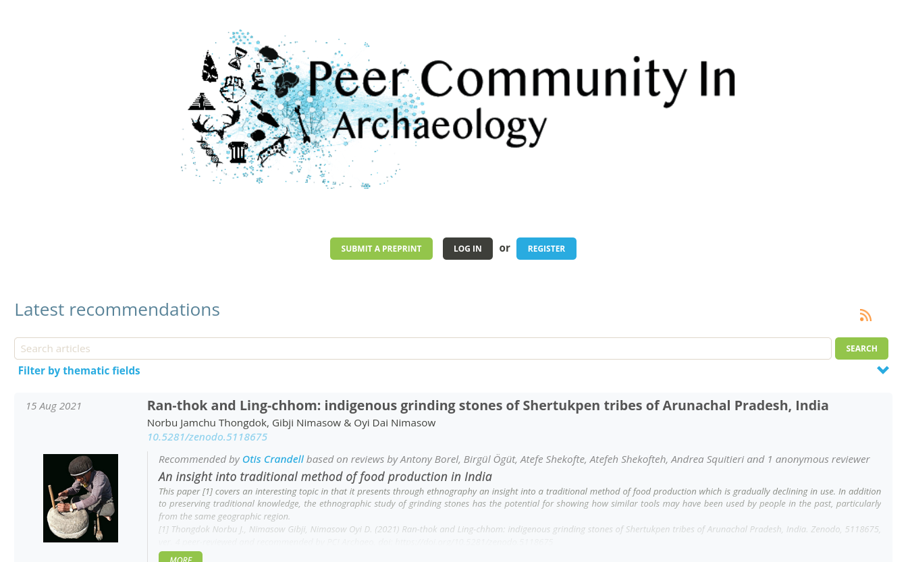

Pratiques et enjeux scientifiques à PACEA
(Groupe d’Archéologie Computationnelle — Réunion de lancement)
Frédéric Santos
Lundi 29 novembre 2021
1. Situation générale
- Plusieurs membres de PACEA concrètement investis dans la thématique de la science ouverte.
- Plus d’utilisateurs de R que par le passé (et plus globalement, plus de “culture de la programmation”).

2. Formation
2.1. Formation initiale
- Dans le cadre du Master 1 Biogéosciences : 6 heures de cours/TP d’introduction à R et à la statistique.
- Un site web compagnon pour le cours (créé en Rmarkdown).
- Pas d’évaluation.
2.2. Formation continue (“officielle”)
Animation de formations (CNRS) auxquelles ont pris part certains membres de PACEA :
- initiation à R ;
- bonnes pratiques en science des données pour la recherche reproductible.
2.3. Ateliers internes PACEA “Recherche reproductible”
Organisation ponctuelle d’ateliers “Recherche reproductible” (environ 15 participants) :
- programmation lettrée ;
- rédaction d’articles reproductibles.

3. Exemples d’articles reproductibles
- “Reproductibilité faible” (partage du code et des données) : une pratique qui devient plus répandue.
- “Reproductibilité forte” (capture intégrale de l’environnement logiciel) : pratique encore exceptionnelle.
- Rédaction de manuscrits à 100% en Org mode ou Rmarkdown : quelques exemples encore marginaux.
3.1. Rey et al. (2021)
Cas assez répandu à PACEA : étude ouverte et transparente.
- Données en accès public
- Code source disponible sous forme de notebook (pdf) en Supporting information online.
Référence complète :
L. Rey, S. Rottier, F. Santos, & G. Goude (2021). Sex and age-related social organization in the Neolithic: a promising survey from the Paris Basin. Journal of Archaeological Science: Reports, 38, 103092. http://dx.doi.org/10.1016/j.jasrep.2021.103092
3.2. Queffelec et al. (2021)
Cas nettement plus rare : data paper rédigé à 100% en Rmarkdown, et publié dans une revue à accès ouvert.
Fichier source (.Rmd) du manuscrit disponible sur OSF.
Référence complète :
A. Queffelec, P. Fouéré, & J. Caverne (2021). A database of lapidary artifacts in the Caribbean for the Ceramic Age. Peer Community In Archaeology. http://dx.doi.org/10.31235/osf.io/7dq3b
3.3. Santos (2020)
Cas a priori (?) unique :
- Note technique rédigée à 100% en Org mode
- Code ouvert
- Réutilisation de données libres
- Image Docker avec capture de l’environnement (R + Emacs + LaTeX) pour recompiler le manuscrit
- Dépôt GitLab associé
Référence complète :
F. Santos (2020). Modern methods for old data: an overview of some robust methods for outliers detection with applications in osteology. Journal of Archaeological Science: Reports, 32, 102423. http://dx.doi.org/10.1016/j.jasrep.2020.102423